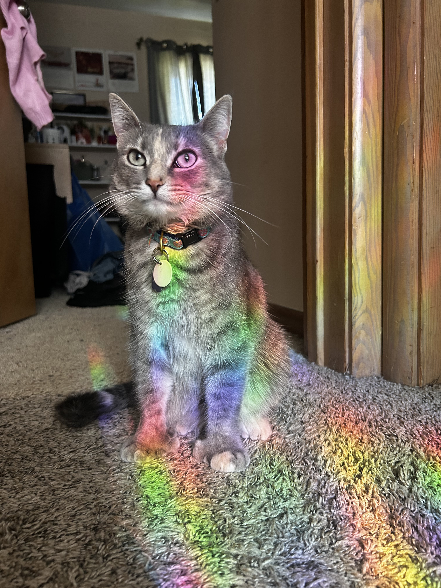
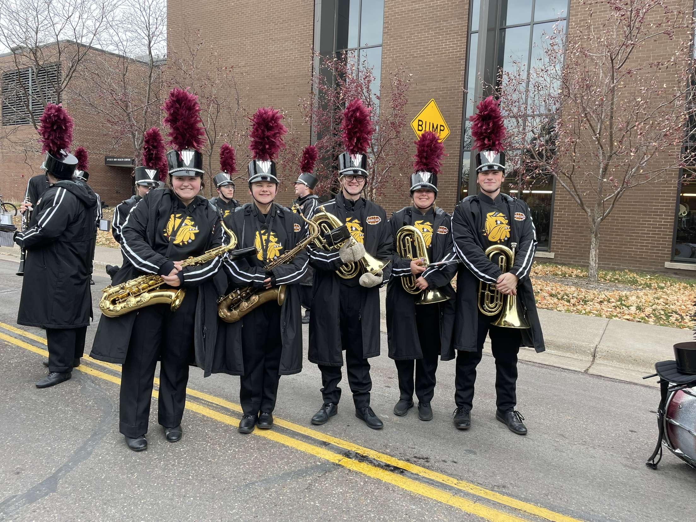
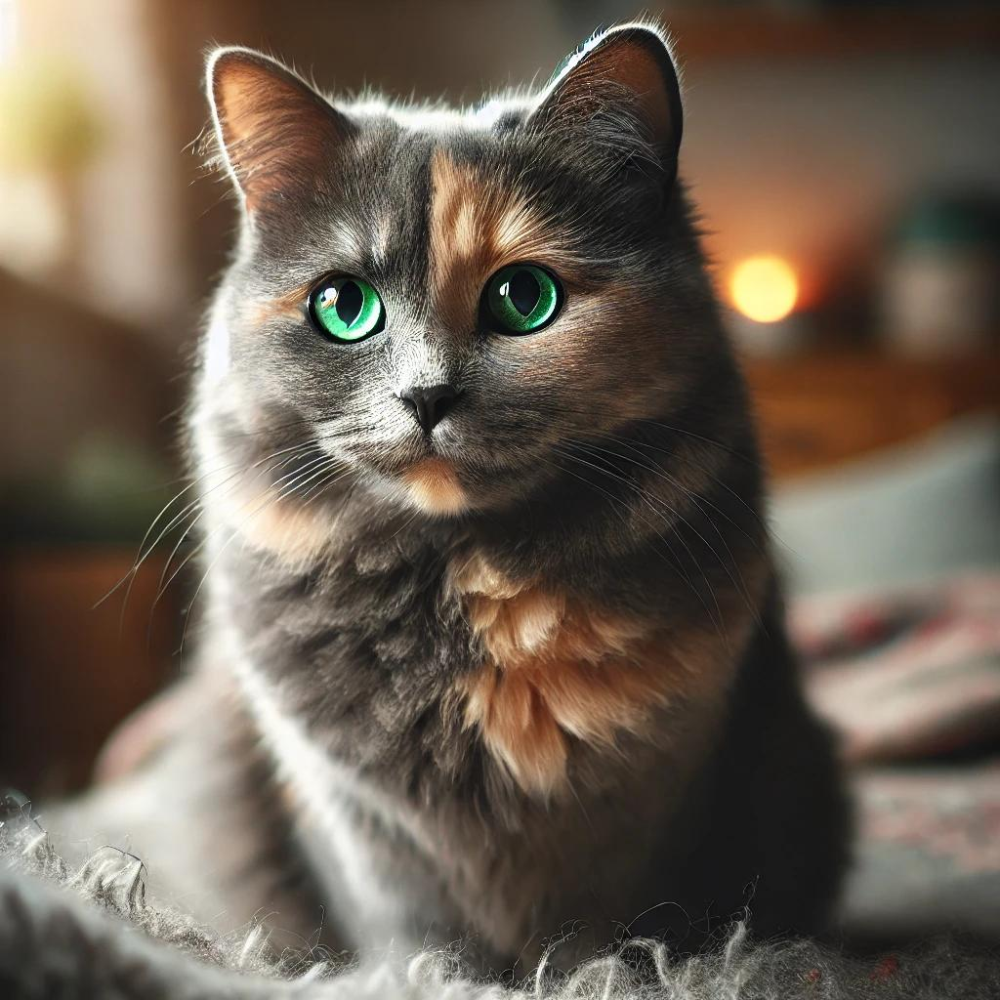
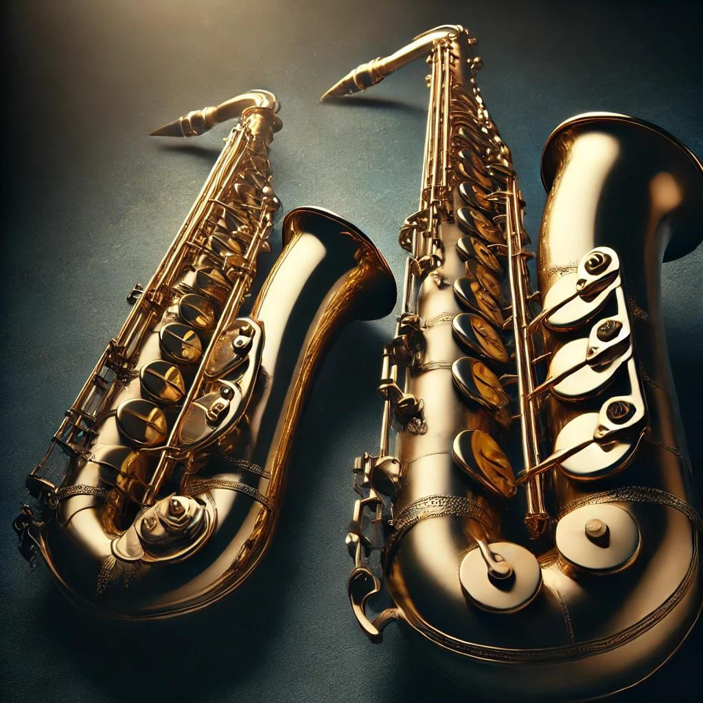

<!DOCTYPE html>
<html lang="en"></html>
<meta charset="UTF-8"> 
<title>Jillian Wavra - Home</title>
<link rel="stylesheet" type="text/css" href="stylesheet.css">

	<body style="background-color:#0d2635;" >
	<header>
        	<h1>Jillian Wavra</h1>
        	
		<style>
		ul#menu li {
 		 	display:inline;
		}
		</style>
        	<nav>
            	<ul id="menu">
        	    	<li><a href="index.html">Home</a></li>
        	    	<li><a href="aboutme.html">About Me</a></li>
        	    	<li><a href="contactme.html">Contact Me</a></li>
        	    	<li><a href="game.html">Game</a></li>
        	    	<li><a href="resume.html">Resume</a></li>
                        <li><a href="project.html">Project</a></li>
            	</ul>
        	</nav>
    	</header>
               <main>
		<p style="text-align:center">In my free time I love spending time with my cat Ivy and playing music. I have been involved in the music program here at UMD for the past few years in the Wind Ensemble as well as the Marching Band. I started playing music when I was 11 and have been playing ever since. I play tenor and baritone saxophone and have been for the past 5 years. My cat Ivy I adopted a year ago this summer and she is very special. She has thumbs and loves cheese!</p>
		</main>
		
                
                
                
                
        </body>

</html>
